Footer
My name is Kyle George. I enjoy cooking delicious food on the
healthy
and
unhealthy side
.
I like to branch out and enjoy food from all over the world!
Kyle's Grub Hub
These are my Favorite Healthy Soup Recipes
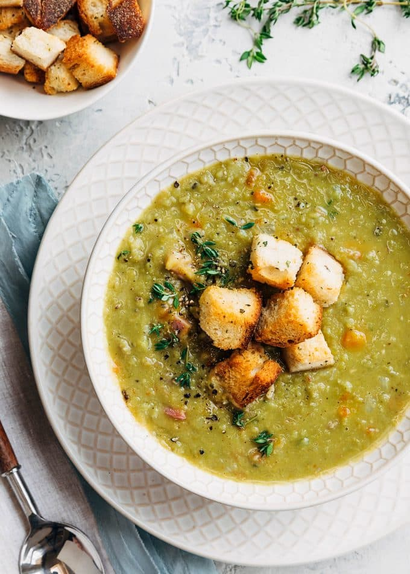
Detox Vegetable Soup
Coconut Thai Chicken Zoodle Soup
Split Pea with Ham Soup
These are my Favorite Soup Recipes:
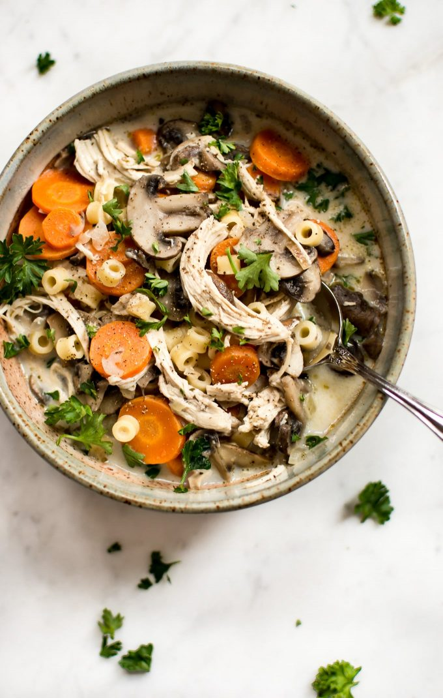 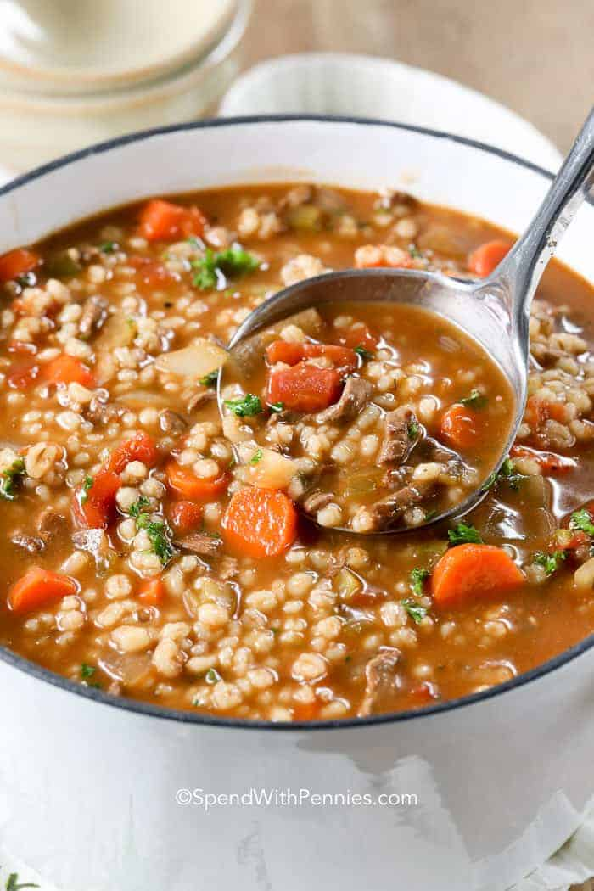 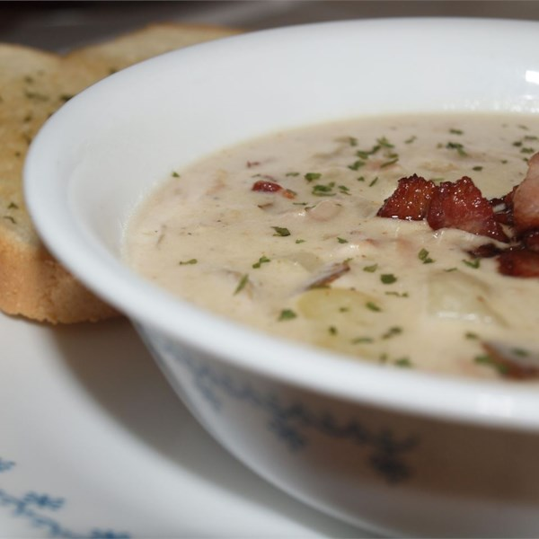
Chicken and Mushroom Soup
Beef and Barley Soup
Clam Chowder
These are my Favorite Healthy Recipes:
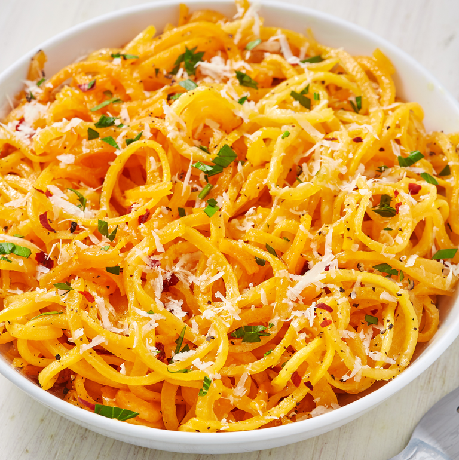 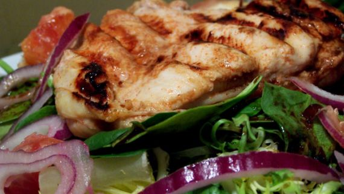 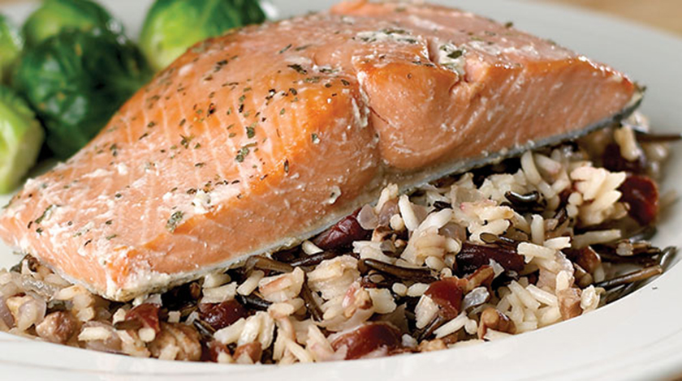
Butternut Squash Spaghetti
Grilled Chicken Salad with Raspberry Vinaigrette
Baked Salmon Fillets with Wild Rice Pilaf
These are my Favorite Recipes:
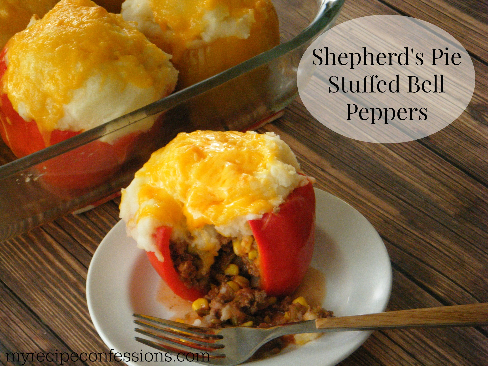 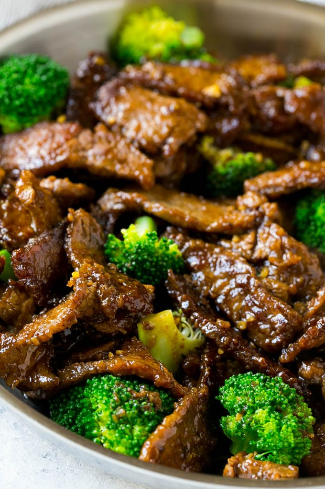 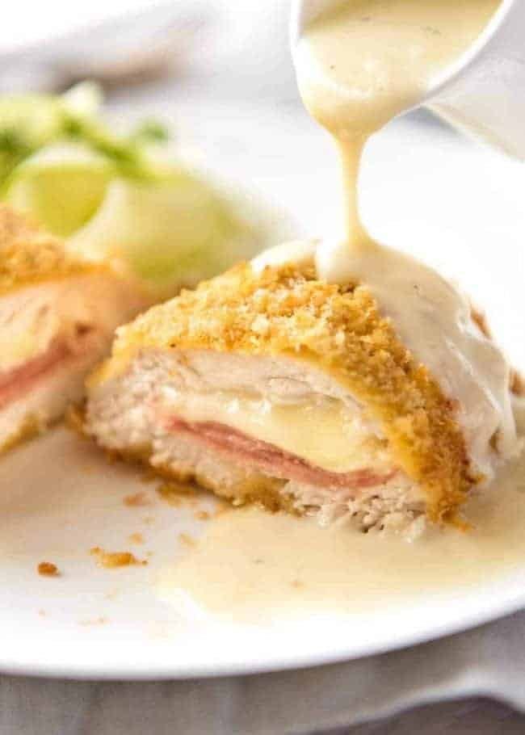
Shepherds Pie Stuffed Peppers
Beef and Broccoli Stir Fry
Chicken Cordon Bleu
These are my Favortie Healthy Desserts
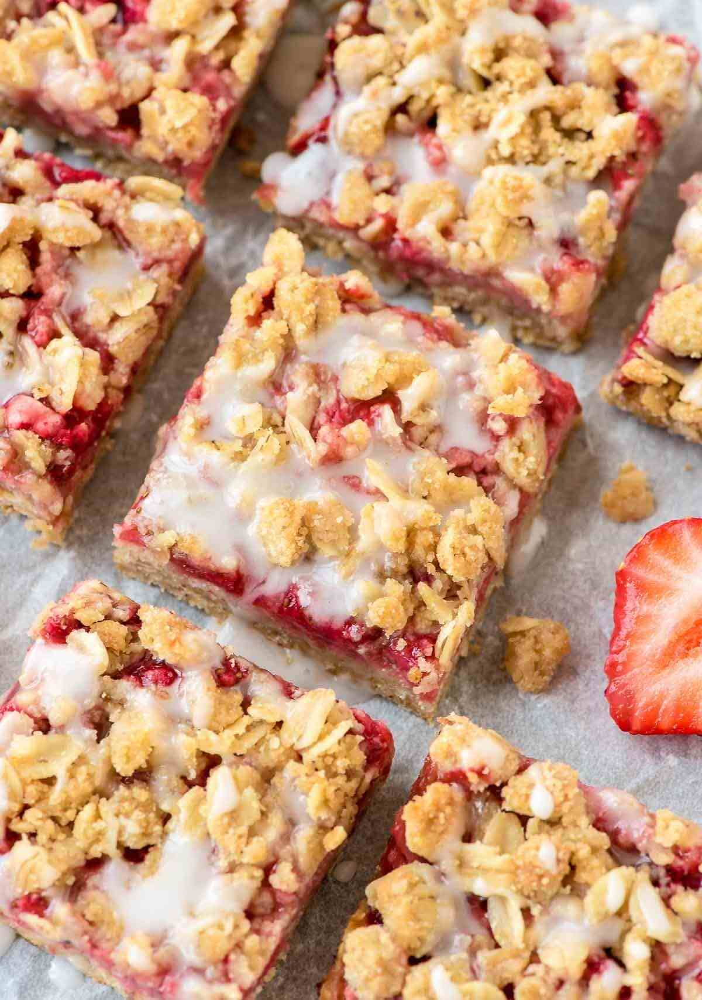 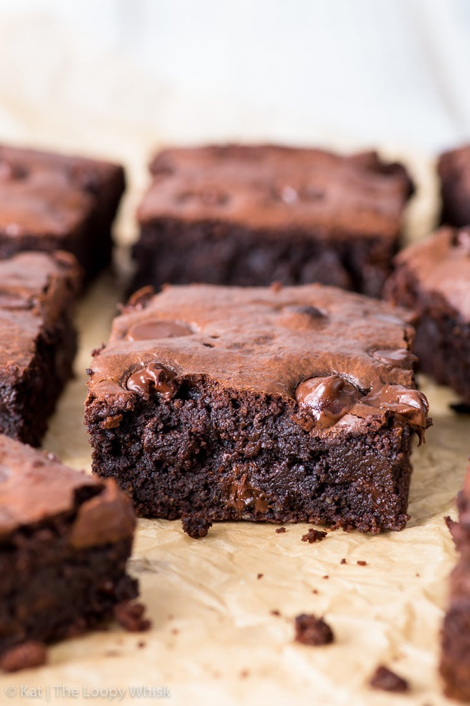 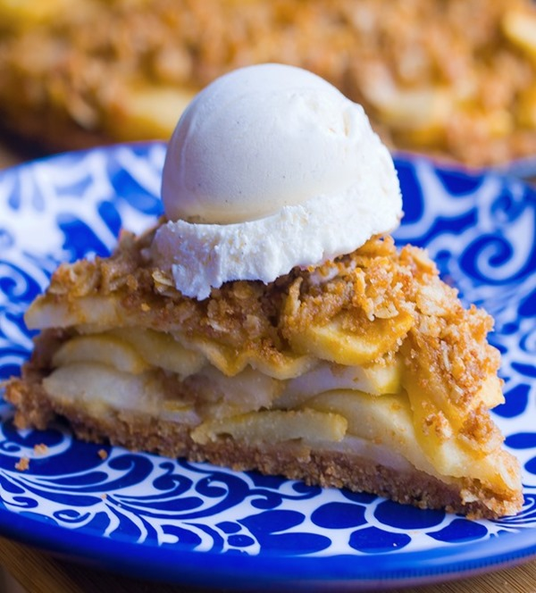
Strawberry Oatmeal Bar
Super Fudgy Healthy Brownie
Healthy Apple Pie
These are my Favorite Desserts
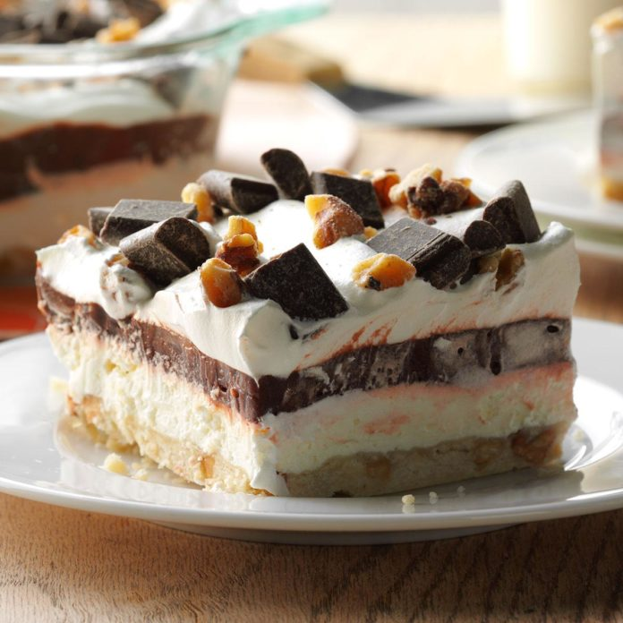 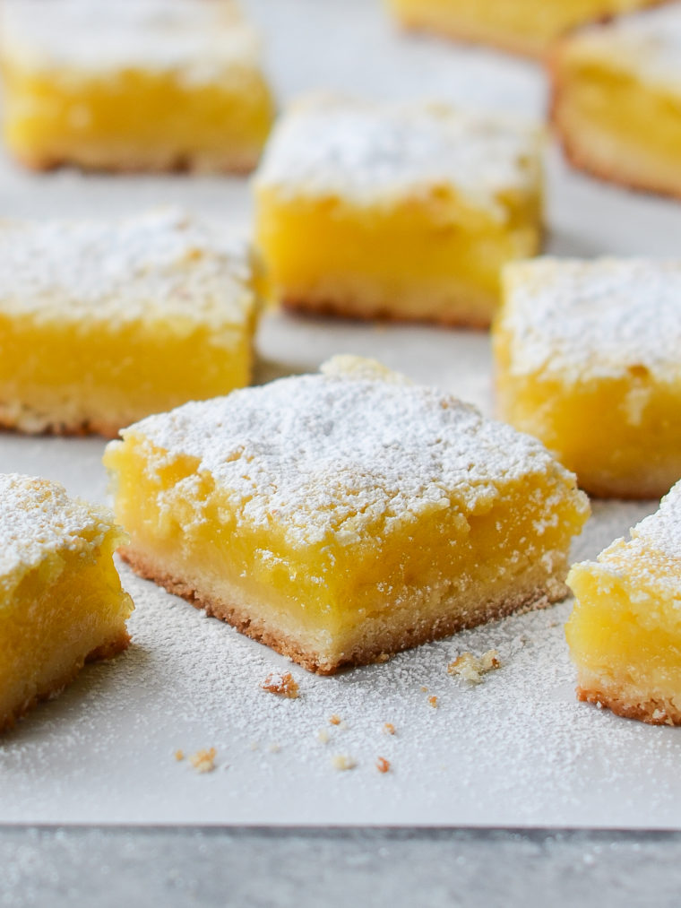 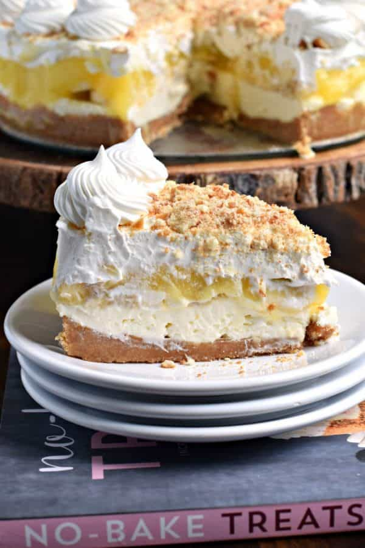
Four Layer Chocolate Dessert
Lemon Bars
Banana Cream Cheesecake